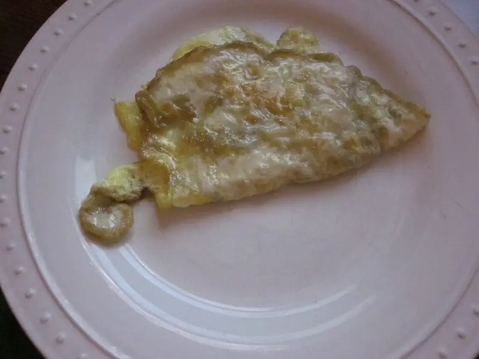

Фото: Infrogmation of New Orleans, CC BY 2.0

Омлет на пару
Нежный омлет без корочки и лишнего масла, подходит детям
20 мин2 порц.223 ккал на порциюБ 16 · Ж 16 · У 4Русская кухня
Продукты на 2 порц.
- Яйцо куриное4 шт
- Молоко120 мл
- Сливочное масло5 г
- Соль1 щеп.
- Укроп по желаниюпо вкусу
Как готовить
- Налейте в кастрюлю воды на 3-4 см и доведите до кипения на сильном огне, затем убавьте до среднего.
- Смажьте сливочным маслом две термостойкие миски или формочки.
- Яйца с молоком и солью перемешайте вилкой до однородности, 1 минуту. Сильно не взбивайте, иначе омлет осядет.
- Разлейте смесь по формочкам и поставьте их в пароварку или на решётку над кипящей водой.
- Накройте крышкой и готовьте 12-15 минут. Крышку не открывайте первые 10 минут.
- Омлет готов, когда середина упругая и не дрожит, а нож выходит сухим. Посыпьте рубленым укропом.
Совет. Пропорция простая: на 1 яйцо 30 мл молока. Если молока больше, омлет не схватится и будет водянистым.